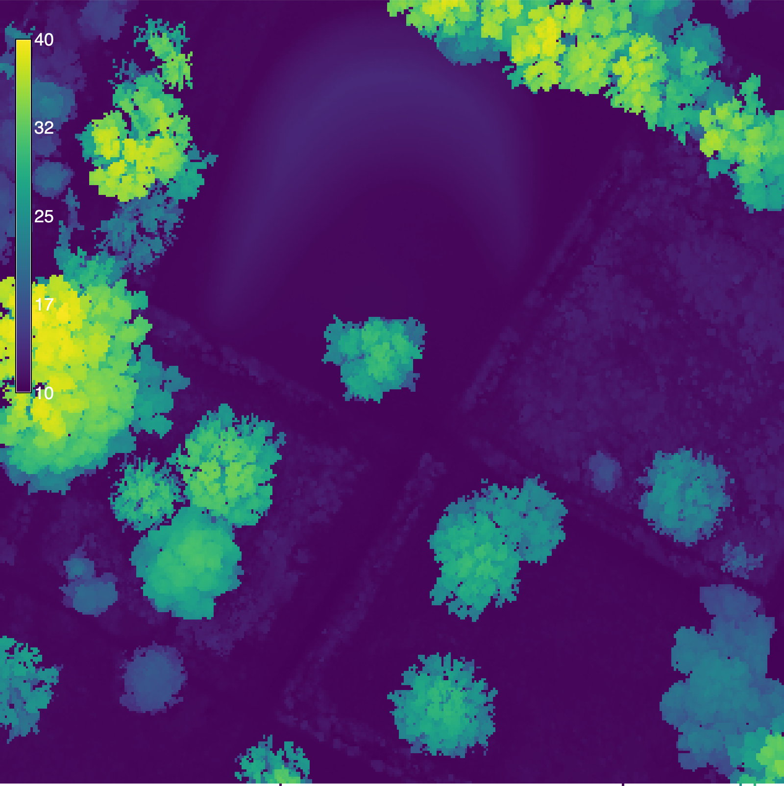
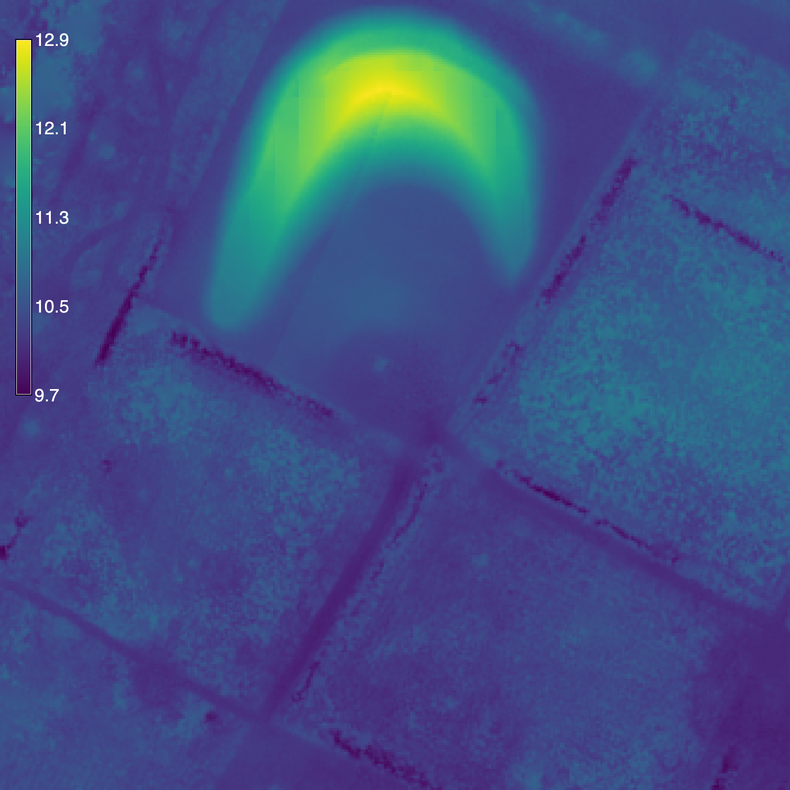
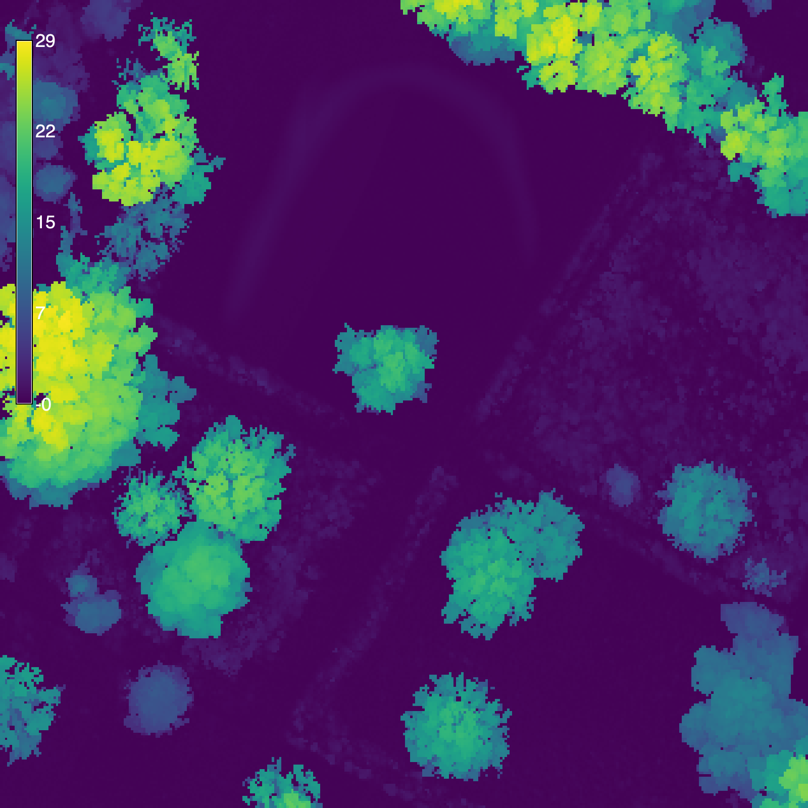

%conda install gdownLidar
Dependencies
Setup
# Import modules
import sys
import subprocess
from pathlib import Path
from contextlib import suppress
import gdown
# Find GRASS Python packages
sys.path.append(
subprocess.check_output(
["grass", "--config", "python_path"],
text=True
).strip()
)
# Import GRASS packages
import grass.script as gs
import grass.jupyter as gj
from grass.tools import Tools
# Create and initialize GRASS project
try:
gj.init("hilltop")
except ValueError:
with suppress(ValueError):
gs.create_project("hilltop", epsg="2801")
gj.init("hilltop")
tools = Tools(overwrite=True)
# Print projection
projection = tools.g_proj(format="shell", flags="p").keyval
print(projection.get("name"))NAD83(HARN) / Louisiana SouthDownload lidar
# Set url
url = "https://drive.google.com/file/d/1_RpKPPOvtgpajvw4MdZNJPZ9dud5kGMo/view?usp=drive_link"
# Set filename
output = "meadow.laz"
# Download data
gdown.download(url, output, quiet=False)Downloading...
From: https://drive.google.com/uc?id=1_RpKPPOvtgpajvw4MdZNJPZ9dud5kGMo
To: /Users/baharmon/academia/computational-ecology/meadow.laz
100%|███████████████████████████████████████████████████████████████████████████████████| 27.1M/27.1M [00:07<00:00, 3.75MB/s]'meadow.laz'Bin lidar
%%time
# Bin lidar
tools.r_in_pdal(
input="meadow.laz",
output="surface",
method="max",
resolution=0.3,
flags="o"
)
# Set color gradient
tools.r_colors(map="surface", color="viridis")
# Visualize
m = gj.Map(width=1600)
m.d_rast(map="surface")
m.d_legend(raster="surface", color="white", at=(50, 95, 2, 4))
m.show()
CPU times: user 6.48 ms, sys: 27.4 ms, total: 33.9 ms
Wall time: 1 sImport lidar
%%time
# Import lidar
tools.v_in_pdal(
input="meadow.laz",
output="lidar",
flags="o"
)
# Print point count
info = tools.v_info(map="lidar", format="json", flags="gt").json
print(info["points"])2000000
CPU times: user 4 ms, sys: 18.5 ms, total: 22.5 ms
Wall time: 7.67 sSet region
# Set region
tools.g_region(vector="lidar", res=0.3)Decimate lidar
%%time
# Decimate lidar
tools.v_decimate(
input="lidar",
output="points",
layer=1,
zdiff=1.0,
flags="gz"
)
# Print point count
info = tools.v_info(map="points", format="json", flags="gt").json
print(info["points"])210216
CPU times: user 1.92 ms, sys: 7.27 ms, total: 9.19 ms
Wall time: 5.07 sClassify ground
# Install addon
tools.g_extension(extension="v.lidar.mcc")%%time
# Classify lidar
tools.v_lidar_mcc(
input="points",
ground="ground",
nonground="nonground",
nl=3,
t=0.2,
j=0.1,
f=2,
s=15
)CPU times: user 2.5 ms, sys: 9.39 ms, total: 11.9 ms
Wall time: 6.22 sInterpolate ground
%%time
# Interpolate ground
tools.v_surf_rst(
input="ground",
elevation="elevation",
nprocs=12
)
# Set color gradient
tools.r_colors(map="elevation", color="viridis")
# Visualize
m = gj.Map(width=1600)
m.d_rast(map="elevation")
m.d_legend(raster="elevation", color="white", at=(50, 95, 2, 4))
m.show()
CPU times: user 9.35 ms, sys: 29 ms, total: 38.4 ms
Wall time: 11.1 sCalculate canopy height
# Calculate difference
tools.r_mapcalc(expression="canopy = surface - elevation")
# Set color gradient
tools.r_colors(map="canopy", color="viridis")
# Visualize
m = gj.Map(width=1600)
m.d_rast(map="canopy")
m.d_legend(raster="canopy", color="white", at=(50, 95, 2, 4))
m.show()